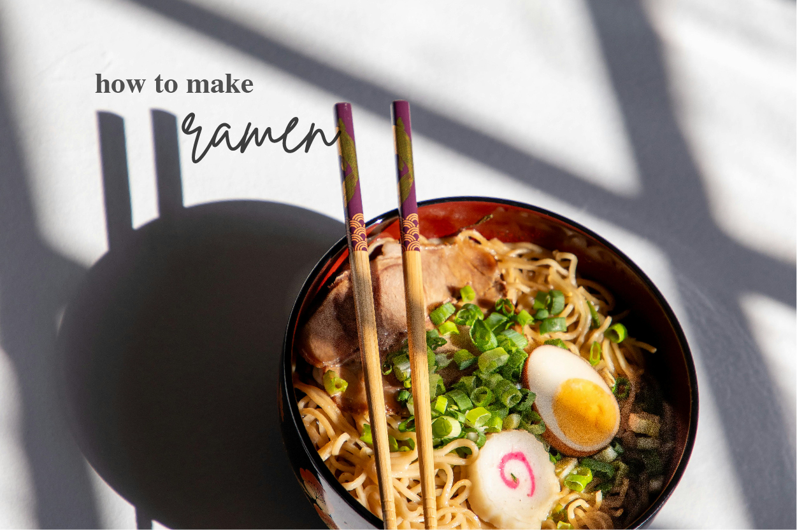

⊱ Essential ramen soup base
that will spark up your ramen ⊰

the secret to a quick tasty ramen soup base
Level of Difficulty: ✦ ✧ ✧ ✧ ✧
-----------------------------------------------------------------------------------------------------------------------------
Ingredients
- noodles of chioce
- 300mL water
- drizzle of sesame oil
soup base
- 1 tbsp light soy sauce
- 1 tbsp garlic granules
- 1 tsp onion powder (optional)
- 2 tbsp chicken powder
- 1 tsp sesame seeds
Equipments
➤ Yields 1 serving
-----------------------------------------------------------------------------------------------------------------------------
Steps
- Boil 300ml of water in a pot
- Add noodles of choice once boiled
- Place all ingredients of the soup base in a bowl
- Take the cooked noodles out of the pot to the bowl with the
soup base ingredients,
then slowly pour in the boiling water from the pot
(adjust amount of water according to your liking)
- Give it a mix and top with some sesame, sesame oil or an
extra ramen egg, enjoy!
-----------------------------------------------------------------------------------------------------------------------------